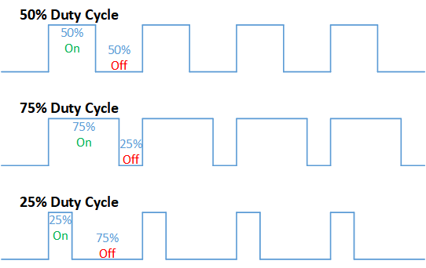
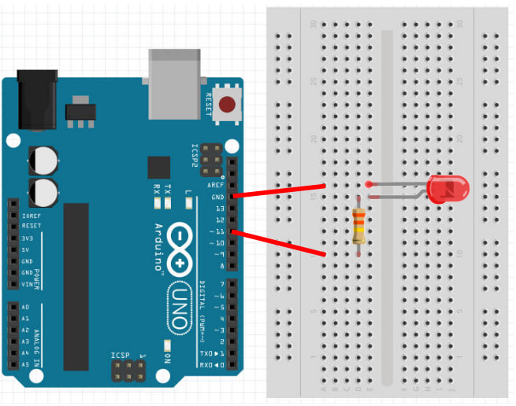

Analog Output
PWM
Most micro-controllers can only output full voltage (5V or 3.3V depending on the model) or zero volts. They are usually not capable of outputing any voltages inbetween these (eg. 2.5V).
But we often need to control power (eg. brightness of a LED, speed of a motor). To do so, we rely on a technique call Pulse Width Modulation (PWM).
PWM is really simple...

...if we can't supply half the voltage, we'll simply supply full voltage, but for half the time. By changing the ratio between the on time and the off time, we can achieve any power level that we want.
Pins on the Arduino
On the Arduino, only the pins marked with a tilde ~ are capable of PWM output. These are pins 3, 5, 6, 9, 10, 11.
analogWrite
The analogWrite command can be used to set the PWM power level of the specified pin. Here are a few examples...
analogWrite(11, 0); // Set the power on pin 11 to zero (off)
analogWrite(11, 255); // Set the power on pin 11 to 255 (max)
analogWrite(11, 127); // Set the power on pin 11 to 127 (around 50%)
Brightness control
Connect an external LED to your Arduino as follows (...same wiring as in the Digital Output section)...

...then try the following code.
void setup() {
pinMode(11, OUTPUT);
}
void loop() {
for (int a=0; a<256; a++) {
analogWrite(11, a);
delay(10);
}
}
analogWrite(11, a) : The for loop will write a power of 0 to 255 to pin 11. There is a short delay of 10ms, else the entire loop will complete in a short fraction of a second (...too fast to see).
Upload your code. If your wiring and code is correct, the external LED should gradually change from dimly lit to max brightness.
Exercise
In the above example, the brightness goes gradually from zero to max. But once it reaches max brightness, it abruptly changes back to zero brightness. Modify the program so that it will gradually change back from max to zero.